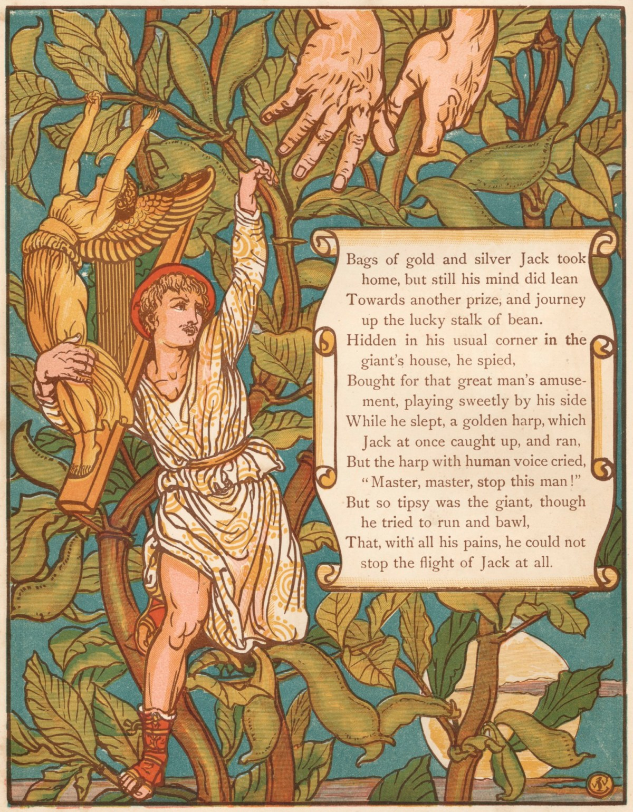
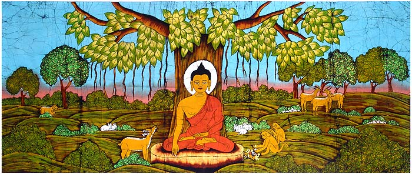
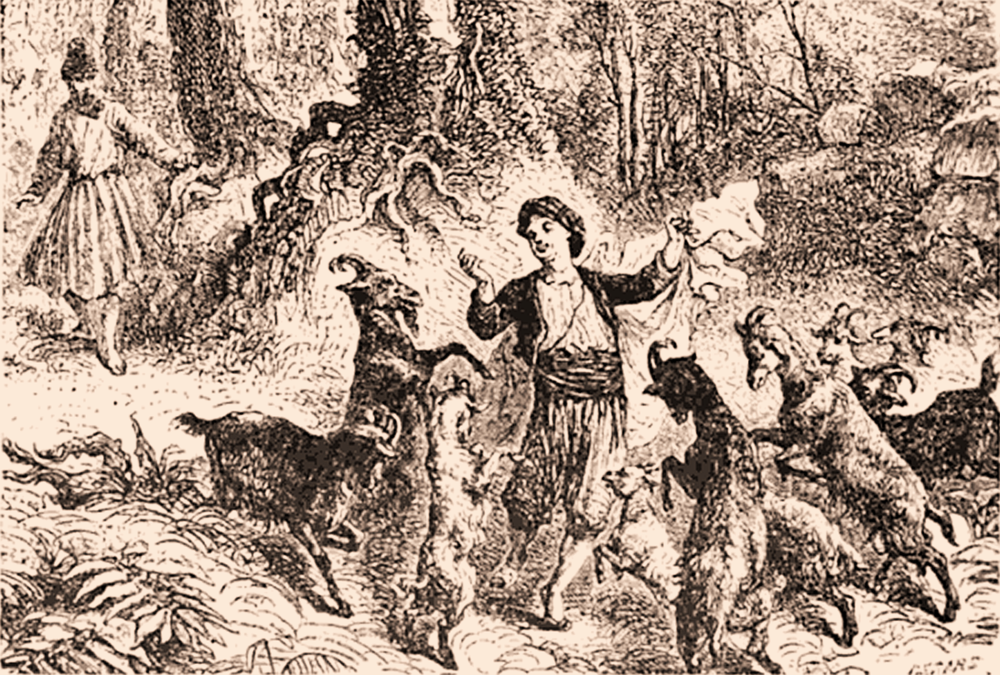
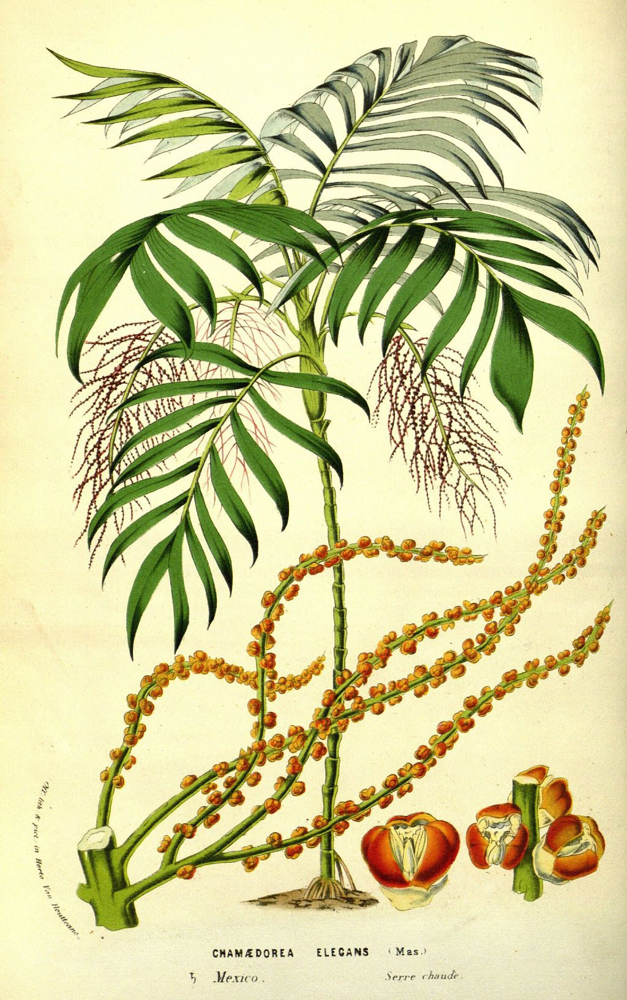
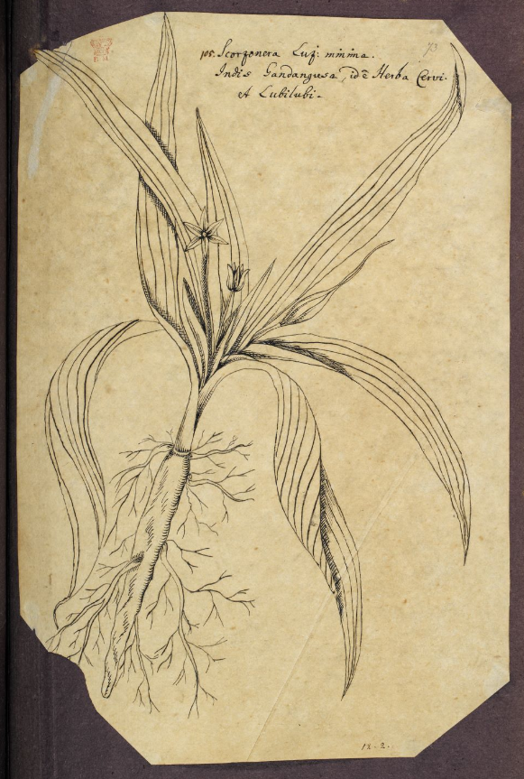
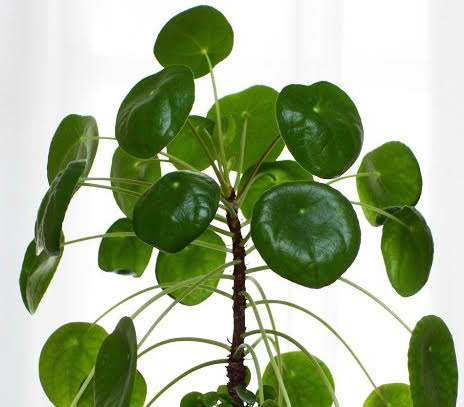

e
Colocasia
aElephant Ears
fsoutheastern Asia and the Indian subcontinent.
hhousehold
l
starch staple
i
The species Colocasia esculenta is invasive in wetlands along the American Gulf coast, where it threatens to displace native wetland plants.
e
Alocasia
aAfrican Mask
ftropical areas of Asia and Australia
hlivingroom
l
the tree that grows up to the heavens'
i
Alocasia conquered living rooms in the 1950s

e
Streptocarpus
aAfrican violets
f central, eastern and southern Africa
hgardening
l
devotion, commitment, and faithfulness.
i
The first Streptocarpus to reach British gardens was Streptocarpus rexii. This species was sent to Kew in 1824 by Mr Bowie, who was His Majesty’s collector in South Africa.
e
Ficus benjamina
aWeeping fig
fSoutheastern Asia through Malesia to northern Australia and southwestern Pacific
hpopular plants for indoor bonsai.
l
unity and universual;
official tree of Bangkok
i
The United States Forest Service states, "Roots grow rapidly, invading gardens, growing under and lifting sidewalks, patios, and driveways." They conclude that its use in tree form is too large for residential planting, therefore, the species should only be used as a hedge or clipped screen. 
e
Aloe Vera
a‘plant of immortality’
fdessert
hhouseplant
l
Burns healing/
It’s a natural first aid kit
i
The Arabian peninsula where Aloe vera evolved is close to historically important early trade routes between Asia and the Mediterranean. It seems likely that people pragmatically selected a locally growing plant with large, succulent leaves and, finding Aloe vera did the job, saw no need to test similar plants growing in more exotic locations.
e
Coffee
aCoffea
fAsia and Southern Africa
hdecoration as houseplant
l
Colonial crops/coffee beans/
helping hand in times of need
i
The plant was cultivated in Yemen around 1000 AD, and later it spread around the world. It’s a widespread plant - but not literally: the bushes are regularly pruned because smaller plants are easier to harvest. Some 33 species can be found in Africa, 14 species in Madagascar and 3 species in South-East Asia and Mauritius. Arabica is the most flavoursome coffee variety and is used for no less than three-quarters of total global coffee production. 
e
Chamaedorea elegans
aparlour palm
fSouthern Mexico and Guatemala.
hmost heavily sold houseplant palms in the world
l
symbol of resurrection；
dream symbols
i
Popular since Victorian times, this was a plant commonly found growing in home Parlors (and that's how it got its common name). The Parlor was often considered the best room in the house and somewhere important guests would be entertained. Looking back it makes perfect sense that the Victorian's would only try and grow the most hardy and robust looking plants. For minimal care and effort they'd be rewarded with a room enhancing plant. 
e
Aglaonema
aChinese evergreens
fAsia and New Guinea.
hhouseplants
l
good luck and prosperity, as auspicious symbolic
i
They were introduced to the West in 1885, when they were first brought to the Royal Botanic Gardens, Kew. 
e
Araucaria heterophylla
aNorfolk pine
fNorfolk Island
has living Christmas tree；Cemeteries
l
legends, gives love, and hope.
i
The first European known to have sighted Norfolk Island was Captain James Cook. In 1774, on his second voyage to the South Pacific in HMS Resolution, Cook noted the presence of large forests of tall, straight trees that appeared to be suitable for use as masts and yards for sailing ships. However, when the island was occupied in 1788 by convicts transported from Britain, it was found that Norfolk Island pine trees were not resilient enough for those uses and the industry was abandoned
e
Aspidistra
aRohdea Roth/万年青/
fChina and Vietnam.
hsymbol of dull middle-class respectability
l
luck: long live life;
a symbol of full middle class respectability
i
As a popular foliage houseplant, A. elatior became popular in late Victorian Britain and was so common that it became a "symbol of dull middle-class respectability". As such, it was central to George Orwell's novel Keep the Aspidistra Flying, as a symbol of the need of the middle class to maintain respectability according to Gordon Comstock, the novel's protagonist. It was further immortalised in the 1938 song "The Biggest Aspidistra in the World", which, as sung by Gracie Fields, became a popular wartime classic.

e
Pilea peperomioides
aChinese Money Plant/一点金
fYunnan and Sichuan provinces in southern China.
hinstagram
l
wealthy
i
Pilea peperomioides is native to Yunnan and Sichuan provinces in southern China. Here it grows on shady, damp rocks in forests at altitudes from 1500 to 3000m. It is very rare and possibly endangered in its native habitat. However, it is kept in China and worldwide as an ornamental plant. It is one of the easiest houseplants to grow, and can be easily propagated to share with friends, but until recently these plants have not been widely available commercially. Pilea Peperomioides was long a mystery to horticulturists, who couldn't determine what kind of plant it was or from where it had originated. It was later discovered the plant is native to the Yunnan province in southern China, and was brought to Scandinavia by a missionary who shared cuttings of the plant with friends and neighbors, which explains its ubiquity in Scandinavian homes.

e
Monstera Deliciosa
aSwiss Cheese Plant
ftropical areas of Asia and America
hcomment plant indoor
l
a long life and the honouring of elders and respected people
i
In feng shui, monstera plants represent growth, upward energy, and abundance. They are typically placed in the work or financial corners of a home’s Bagua map or in offices to attract the energy of professional and financial growth. Placed in any corner of the Bagua map, however, monstera plants can attract growth and energy. So, they can be used to invigorate your family life, health, or romantic relationships, too. It’s imperative, however, to place a monstera plant in a location where it has plenty of room to grow. Otherwise, this positive energy could become stifled, blocked, and a force of negativity.
e
Fatsia japonica
aJapanese aralia/八つ手
fsouthern Japan and southern Korea
hlandscaping plant indoor
l
welcoming and gathering up good fortune and prosperity
i
Their large evergreen leaves look like giant outstretched hands which would be useful for welcoming and gathering up good fortune and prosperity. That is one of the reasons why this shrub, variably called (depending on the region) YATSUDE (八手-Eight-Hand), TENGU NO UCHIWA (天狗の羽内輪- the Mountain Goblin Feather Fan) or ONI NO TE ( 鬼の手- Devil`s Hands) among other names, has long* been one of Japan`s most common household garden plants.
e
Alocasia
aAfrican Mask
ftropical and subtropical Asia and Eastern Australia
hquite coveted houseplants.
l
'the tree that grows up to the heavens'
i
Clean lines and crisp, defined color makes the Kris plant (Alocasia sanderiana) an excellent stand-alone specimen, especially when complementary to modern design. When mixed with a plant grouping, an African mask plant can turn a group of commonplace houseplants into an exotic, tropical display. Its decorative versatility is second only to the plant itself.
e
Pachira aquatica
aaquatic(latin)/Money tree/金钱树
fnative to Central and South America
hoffice/shops/reasturant
l
good energy, satisfaction, happiness and wealth.
i
The name "money tree" is believed to refer to a story of its origin, in which a poor man prayed for money, found this "odd" plant, took it home as an omen, and made money selling plants grown from its seeds.
e
Yucca aloifolia
aSpanish bayonet
fMexico and Central America
hgardens and parks of the Spain/indoor hall
l
new opportunities, loyalty, protection and purity.
i
The yucca was first described by Swedish botanist Carl Linnaeus in the 1750s in his taxomony of plant and animal species, but it was being used by Native Americans long before that. In fact, Navajos used the yucca root as a soap, pounding the dry roots and whisking them into cold water to create a soapy lather they used to clean clothes, hair and themselves. Yucca suds were also used in Native American rituals involving spiritual cleansing.
e
Chuniophoenix
aHainan fan palm
fChina: Hainan and northern Vietnam
hChinese living room
l
Longevity
i
Chuniophoenix is a genus of palm tree named after Chun Woon-Young, then director of the Botanical Institute, Sun Yat Sen University, Guangzhou. It contains three known species, native to southern China and Vietnam. Chuniophoenix is a member of tribe Chuniophoeniceae, a small group of palms that exhibit great morphological diversity and interesting biogeography. The tribe includes four genera: Chuniophoenix with 3 species in China and Vietnam, Kerriodoxa (monotypic) in Peninsular Malaysia and Thailand, Nannorrhops (monotypic) from Arabia to Afghanistan, and Tahina (monotypic) in Madagascar.
e
Dracaena
aDragon Tree/ Madagascar Dragon Tree
f Ancient Greek
hindoor plants
l
derived from the Greek 'drákaina', which means female dragon. This refers to the resin of the draco variety, which is bright red and from the names such as dragon tree and dragon’s blood plant come
i
In the wild Dracaena grows well in Africa and adjacent islands such as Madeira, the Canary Islands, and the Cape Verde Islands, although there are also a couple of species in southern Asia and one in Central America. There are varieties which definitely look like a tree with a trunk, but there are also robust bush shapes. They can reach a ripe old age, and some species develop a very unusual shape in the wild that look positively primeval. The plant has been around in the West since 1752 and has been popular as a houseplant since 1880. Error: Invalid URL
e
Dawn Redwood/红杉木
awater pine
f North American
hyard plant; bonsai
l
the 1940s discovery of dawn redwood (Shuishan , Metasequoia glyptostroboides) in the construction of a modern Chinese national identity, as manifested in Chinese intellectual and popular discourse from the second half of the twentieth century to the present day. As the shuishan was transformed from a distinct biological species into an iconic national species, modern China as an ‘imagined community’ was forged in three dimensions
i
To the Chinese people, the dawn redwood is second only to the panda as a conservation icon. Thought to have been extinct for millions of years, a Save the Redwoods League group discovered that this unusual member of the redwood family still exists in China, shedding its leaves in the fall. Sequoia is believed to be named in honor of Seguoyah, the inventor of the Cherokee script.
e
Dracaena braunii
a富贵竹/Lucy bamboo/ Beigain Evergreen
fCentral Africa
hChinese Restrunant
l
The cultivation of Lucky Bamboo is not an ancient Chinese tradition. It is not a real bamboo, but the stems look like it.
i
The oldest literature on "Lucky Bamboo" that can be found on the Internet today comes from the 1987 "Chinese Flower and Bonsai" magazine. Lucky bamboo was probably introduced into the inland during the reform and opening up. It was soon widely cultivated in the border areas of Guangdong, Guangxi and Hunan, and created a group of flower industry households with 10,000 yuan. Go back to the old almanac calendar, the literature related to horticultural flowers in Europe and the United States shows another story. Plant hunters after the Victorian era collected species that can be kept in gardens all over the world for personal fame and fortune, and at the same time refreshed the Western scientific community's understanding of nature, and endless new species were named. Today, Kew's botanical catalogue shows that both possible scientific names for Lucky Bamboo were published in 1892. Error: Invalid URL
e
Ficus lyrata
afiddle-leaf fig
f western Africa
hBedrooms in Pinterest
l
Fig trees represent our earthly nature as co-creators. As a keystone species, the fig awakens our collective memory of belonging to each other. It inspires us to share our creative energy and desires. Figs resemble a woman’s womb, signaling that now is a fertile time in our life.
i
Nowadays, we associate the fiddle leaf fig with a trendy houseplant for urban apartments. But behind the fashionista appearance lies a dark past in the wild. The Ficus lyrata is what is known as a banyan fig tree (Ficus subgenus Urostigima). Instead of growing by itself, it grows from the top of the crown of another tree. Talk about invading personal space. The seeds of the fiddle leaf fig tree land as right at the top of another tree competing for sunlight in the rainforest. By picking a spot so high up, the fiddle leaf fig tree gains access to high levels of sunlight. After this, as the seed of the plant germinates, the roots of the fiddle leaf fig begin to wrap around the trunk of the other tree. This kind of plant is known as an epiphyte.
e
Alsophila dealbata
asilver fern
ftropical regions
hArriving relatively late in New Zealand's history during the Pliocene epoch
l
ferns were seen as good luck, often for new lovers. eternal youth. invisiblity
i
This mutation was discovered in a shipment of N. exaltata to Boston from Philadelphia in 1894.[2] Other proposals for the origin of the term Boston fern were documented by David Fairchild, who stated that the term came from Florida pioneer nurseryman John Soar, who sent the plants to his friend in Boston.[3]
e
Hedera helix
aEnglish ivy
fmost of Europe and western Asia
hinvasive species in many parts of the world, waste spaces
l
friendship, marriage and close attachment
i
English Ivy was used for holiday decorations, especially Christmas, since the Ancient Roman times. The plant was associated initially with Bacchus, the Roman god of agriculture, revelry and good times. The English Ivy was first introduced by the European colonists in 1727. To the Ancient Greeks, the Hedera helix is an emblem of the muse of comedy, Thalia. Moreover, the Dionysian priestesses, during sacrificial rites, were known to carry staves that were entwined with Ivy. In ancient times, the leaves and berries of the Ivy plant were consumed orally to treat bronchitis and cough. In the year 1597, John Gerard, the British herbalist, recommended to infuse ivy leaves with water and to use it as a wash for watering or sore eyes.